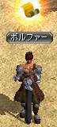
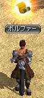

クエ概要、およびクエを受けるための条件
◆Lv598で受諾可。◆メインクエ、１日クエ、限界突破クエ以外の全てのクエを終わらせておく必要がある。
◆分岐は２箇所。３．ハイランダーの脅威の最後にある分岐は非常に重要で、以下ずっと分岐する。本ページではBルートについて解説する。
◆時間の目安としては30分～1時間程度。私自身の経験からなので、参考程度に。
◆EXPがスフィアありで計215M入る。パワキを使ってEXPを稼ぐのもよいかもしれない。
◆クエ進行は以下の通り。
| クエスト名 | 報酬EXP （スフィア有） |
|
|---|---|---|
| １ | 果てなき欲望 | 500万 |
| ↓ ↓ | ||
| ２ | Ａ）優れた建築家 Ｂ）強力な促進剤 | Ａ）2000万 Ｂ）3000万 |
| ↓ ↓ | ||
| ３ | ハイランダーの脅威 | 5000万 |
| ↓ | ||
| ４ | Ｂ）赤い宝石のかけらの正体 | 3000万 |
| ↓ | ||
| ５ | 真実 | 4000万 |
| ↓ | ||
| ６ | 運命の紐糸を奪取しろ！ | 6000万 |
| ↓ | ||
| ７ | １つの始まりは、別の新たな始まりを呼ぶ |
３次転生時の注意点
◆転生直後、振っていたステ、スキルは全て戻され、再振り状態になる。４次転生以降では再振り状態にはならず、増加分（4次転生でステ・スキル各400ポイント）が与えられるのみとなる。
転生で再振り出来るのは今回が最後となるので、よく考えてやろう。
◆転生者はLvが100以上高い人とPTを組んで一緒に狩るとEXPが１になるので注意。
◆転生時の最低Ｌｖが３００になった
以前は転生時の最低Ｌｖが１だったが、
現在は最低Ｌｖが３００に変更になっており、
Ｌｖ６００ちょうどで転生するとＬｖ３００になる。
３次転生の特典
３次転生をすることにより、以下の特典が得られる。（１） ステ、スキルボーナス
それぞれ＋３００のボーナスがもらえる。無転の状態から数えると、１次および２次転生時にもらえる＋３００ボーナスと合わせて計＋６００ずつ得ることになる。
（２） 指の装備出来る箇所
２次転生時から１箇所増え、計１０箇所。（３） 転生者称号Lv３獲得
転生者称号を獲得することにより、自分自身、およびPTメンバーに対し、狩りでのMOB経験値にボーナスがつく。
Lv１では、
◆自分自身のEXPボーナス＋20％ （ただし自分自身のLvが600以上になると無効）
◆PTメンバーのEXPボーナス＋10％ （PTメンバーのLvに関係なく取得）
（４） 「暁の封印玉」使用可能回数増加
１回増えて計３回行う事ができるようになる。転生１回につき、使用可能回数が１回増える。暁の封印玉
課金アイテム（\1,200）。アイテムモールの「スペシャル」にて購入可。
◆装備要求Lv680以下のアイテムが対象。以前はLv400以下が対象だったが、2012/11/20の大型UPでLv680以下に変更になった。
◆インフィニティ武器、セットアイテムには使用不可。不滅、FAなどの680武器には使用可。
◆使用したアイテムは、銀行取引も含め全ての取引が不可になる。すなわちそのキャラクターに持たせっぱなしになる。
◆暁した装備に対し、OPのエンチャ、解除は可。鏡、異次元は不可。
（５） 装備要求Ｌｖ６００以下の装備が装備可能
たとえば転生後にＬｖ４００ぐらいになったとしても、装備要求Ｌｖ６００以下の装備は、自由につける事が出来るようになった。
ただし、ステ要求が足りていない場合は無論つける事ができないので注意。
（６） 経験値ブースト機能獲得（１９００％ＵＰ、Ｌｖ６００まで）
転生すると、Ｌｖ６００になるまでは経験値ブーストが使用出来るようになった。３次転生では１９００％ＵＰ。
「転生者」称号を右クリックする事でブースト機能がＯＮ／ＯＦＦ出来る。
ブーストしたくない人は、称号を右クリックしてＯＦＦにするとよい。


 
